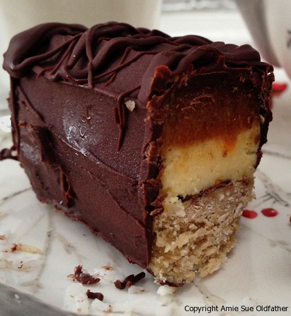
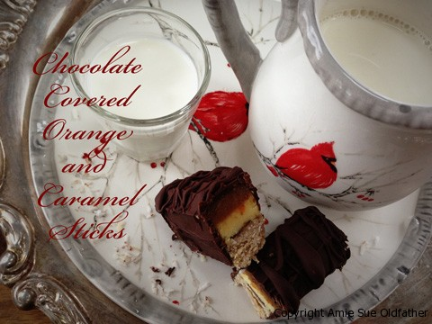
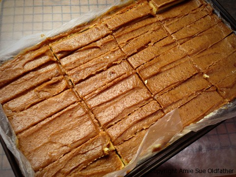
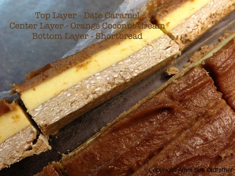
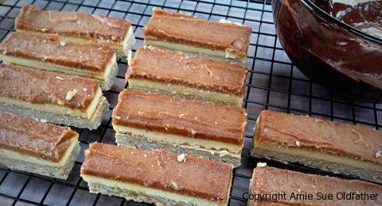
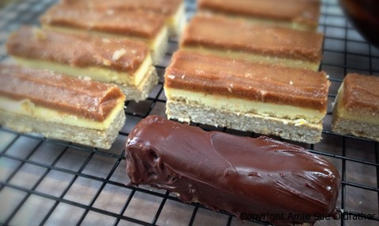
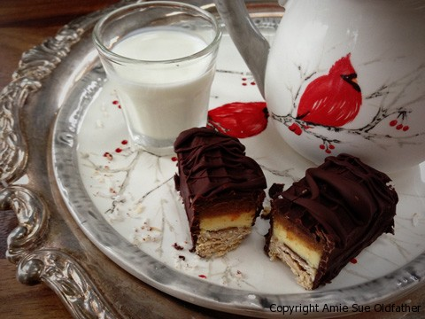

Chocolate Covered Orange and Caramel Sticks
~ raw, gluten-free ~
I have to admit that I was a bit mischievous when selecting photos for this post. I decided to lure you in with the “up close and personal” shot to start off with. Did it work? You see, I categorize this recipe as a “pain in the biscuits” to make and I normally don’t post such recipes, but I have been heavily encouraged to post it so here it is. Why is it a pain in the biscuits to make? Two reasons, number one, the orange layer doesn’t want to adhere to the shortbread bottom.

The second reason is that due to reason number one it makes it challenging to dip the bar or to coat it with chocolate. I tried dipping it but the top slid off, and I had to put my wetsuit on to jump into the sea of chocolate to fish it all out. Messy! I tried piping the chocolate on top, hoping that it would ooze all over the bar (like in those Hersey candy bar commercials) Wrong… I had to remind myself that they are most likely pouring a gallon of chocolate over that bar for the sake of beautiful advertising. Haha
Once the chocolate hits the bar, it starts to set up because the bar just came out of the freezer. And it has to be frozen for this step. Otherwise, it is too soft at room temp. Oy-vey. I tried “finger-painting” the chocolate onto the bar and all though that was the most successful route, it was also the messiest.
I swear other than that, the bar is easy to make and ooooh soooo darn delicious! What? I don’t see a HUGE picture of the bar to the left of my screen. Do you? You must be seeing things. Why do your eyes keep darting to the left, stay focused! Here, allow me to dab your chin, you have some drool on it. Goodness, are you going coo-coo on me? Your eyes are darting left, right, left, right and you are drooling! Get your act together; you have a recipe to make! :)
You will notice that I weighed out the protein powder because the scoops inside different brands range in size. I then poured it into a measuring cup, and it came to about 1 cup. I like to use SunWarrior’s Raw Protein Powder. But I have to tell ya; I struggle using it. There is an electric, magnetic charge in my body, and when it comes in contact with protein powder, the stuff flies all over. Seriously. It’s hard for me to keep it in the measuring cup because it literally wants to jump out. I use to work in a pharmacy where I did the compounding, and when it came to making capsules, I had to stand on wet towels and run a humidifier beside me to “Help” keep the powders in the machine. I would scrape the powder into the capsule, and with another pass over them, it would jump out. lol Anyway, I got caught up in memories there… Not only will the protein powder add great nutrients to the bar it gives the shortbread an earthy, grounded flavor.
Ingredients:
Yields 36 bars
Shortbread:
- 2 cups rolled, gluten-free oats
- 1 cup natural protein powder
- 1/4 cup + 2 Tbsp coconut butter, softened
- 1/2 cup + 2 Tbsp maple syrup
- 3/4 tsp rum flavoring
- 1/2 tsp Himalayan pink salt
Orange cream:
- 1 cup coconut butter/manna, softened
- 3/4 cup fresh orange juice
- 1 Tbsp very finely grated orange zest
- 3 Tbsp raw honey
- 20 drops liquid stevia
- 1/4 tsp orange flavoring
- 1 dash Himalayan pink salt
Caramel:
- 1/4 cup of raw almond butter
- 1/2 cup hot water
- 1 cup packed, Medjool dates, pitted
- 2 tsp vanilla extract
- 20 drops liquid stevia
- 1/8 tsp Himalayan pink salt
Preparation:
Shortbread:
- Line a 12.5″x7″ baking pan with parchment paper or plastic wrap. Bring it up over the sides. Set aside. Now is a good time to make room for this pan in the freezer. You want it to be able to sit flat and even.
- Place the oats in a food processor, fitted with an “S” blade, process to a medium flour texture.
- Add protein powder, salt, and pulse together. Pour into a medium-sized bowl. Set aside.
- In a small-sized bowl combine the coconut manna, agave, and flavoring. Mix well and pour over the dry mixture.
- Remove any rings from your hand and mead the shortbread with your hand, working everything together.
- Press the batter into the pan that you had set aside. Press firmly and evenly. Set aside while you make the orange cream.
Orange cream:
- Place the softened coconut butter, orange juice (I strained the pulp out), orange zest, honey, stevia, orange flavoring, and salt in the food processor, fitted with the “S” blade. Process until creamy and smooth. Stop the machine occasionally and scrape the sides down.
- Pour the orange cream batter over the shortbread and spread evenly. Tap the baking dish on the counter-top to get it nice and even. I do this on top of a towel to save my ears.
- Return the pan to the freezer while you make the caramel.
Caramel sauce and assembly:
- Place all ingredients in a high-powdered blender and process until smooth.
- Stop occasionally to scrape the sides down.
- Spread the caramel on top of the orange cream layer and freeze overnight. Once frozen (the caramel layer won’t freeze hard) remove from the freezer, lift the bars out and place on a cutting board. Using a large knife, score and cut the desired sized bars.
- Here comes the tricky part… covering them with chocolate. Things are about to get messy. I kid you not! :) You can cover them however you wish, but I recommend drizzling the chocolate on top and “finger paint” the chocolate around the edges.
- Store in fridge or freezer. Left at room temperature the top layers will soften.

The photo above ~ Lift the bars out of the pan by grabbing the edge of the plastic wrap. Place on a
cutting board and with a large knife, cut into bar shapes.


Using your fingertips, paint the bars with the chocolate.
I would have loved to show you pictures of this process but
unfortunately, I had chocolate EVERYWHERE!

The photo above ~ Only the love of a mother can love this homely looking bar.
And since I “birthed” it, it is my job to love it. haha

© AmieSue.com